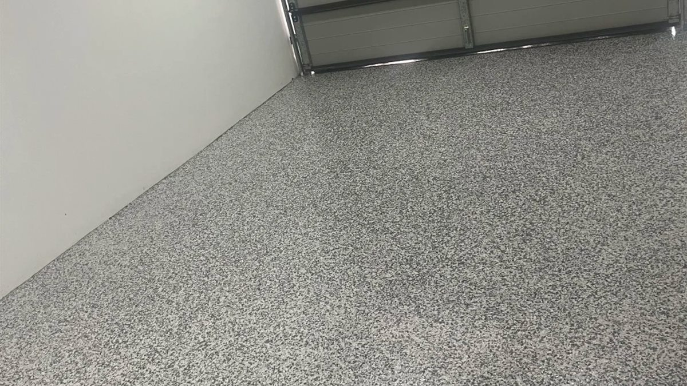
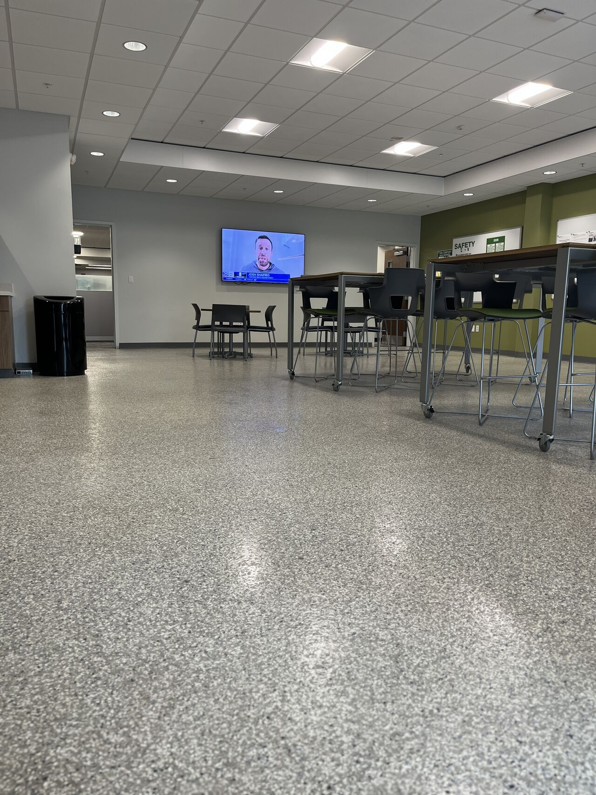

Project Gallery
Flake texture from near and far.
Completed-project views showing the color blend, seamless field and finished commercial environment.



Technical Documents
Flake and system downloads.
Ready for the finalized color and technical package.
PDFSystem Data SheetPlaceholder
PDFFlake Blend CardPlaceholder
PDFTDS / SDS PackagePlaceholder
PDFApplication GuidePlaceholder